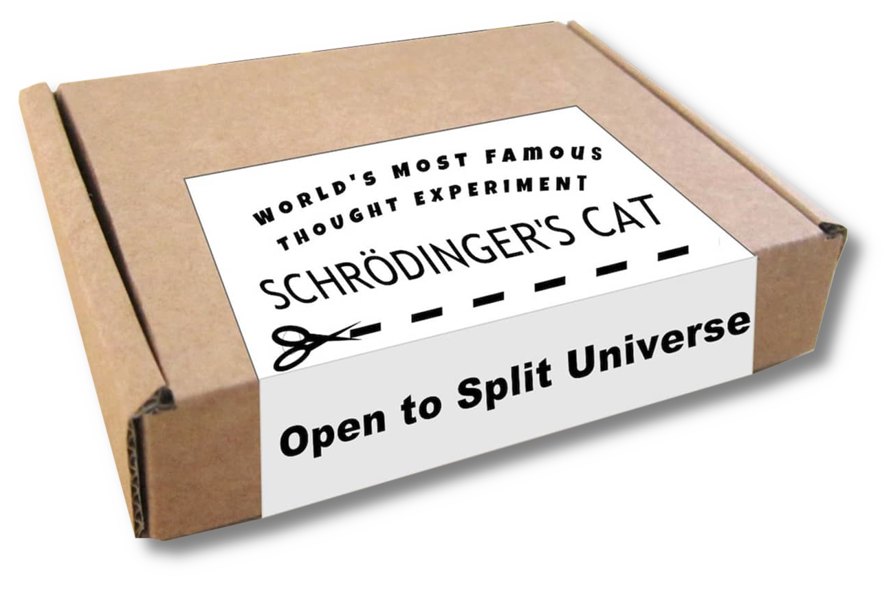
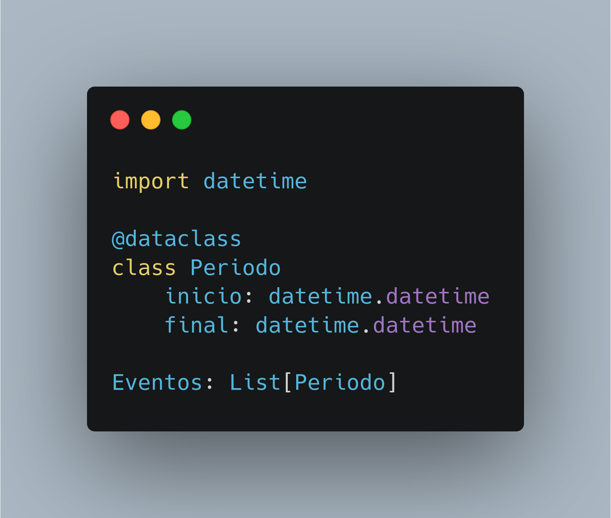

De que vá esta charla
- Qué son los estados imposibles
- por qué deberíamos evitarlos
- Ejemplos
- Enlaces y resumen
Es un principio de diseño
- Suele usarse para los tipos de datos, pero se aplicas también a Estructuras, bases de datos, etc.
- La idea es reducir o eliminar los estados en los que pueden estar los datos, idealmente haciendo imposible representar estados inválidos
Ejemplo (muy sencillo)
Obviamente es aplicable cuando tenemos codificado un estado directamente.
Por ejemplo, supongamos un sistema de publicaciones con tres estados posibles:
- üîò En preparaci√≥n
- üîò En borrador
- üîò Publicado
Estas cosas pasan
¿Es un borrador?
Una posible solución
Reglas para clasificar
Características deseables de una buena clasificación:
- Todas las clases se determinan con arreglo al mismo criterio de clasificación.
- La clasificación ha de ser exhaustiva, es decir, contener todas las especies o miembros del concepto genérico.
- Las partes deben excluirse entre sí
Solo Estados excluyentes
Gracias por su atención

Nah, es broma
El estado no se refiere solo a estos estados específicos, cualquier configuración de datos puede tener un estado.
Vamos a ver otro ejemplo en que no hay un estado explicito, pero nuestra elección de estructura de datos provoca un estado implícito.
Periodos contiguos de tiempo
Vamos a representar una serie de periodos contiguos en el tiempo.
Por ejemplo, para una aplicación que me permita monitorizar en todo momento lo que estoy haciendo (o dejando de hacer).
¡Fácil!
Pero...
Permite la representación de estados imposibles, no deseados.

... pueden haber huecos

... pueden haber solapamientos
Eliminar redundacia
- Podemos hacer que sea imposible representar huecos o periodos que se superpongan
- Similar a normalizar una base de datos: Eliminar la redundancia
Eliminar fecha final
- La marca de final de un periodo es redundante con la de inicio del siguiente.
- Solo necesitamos una fecha, la de inicio.
- El final está definido por el inicio del siguiente periodo.
Menos es más
Ventajas
Podemos ver las ventajas de esta representación
analizando algunas de las operaciones
que podríamos hacer.
Dividir un periodo (1/2)
En el primer caso:
- Hacer ajustes en el periodo anterior
- Insertar un nuevo periodo (posiblemente consultando el periodo siguiente)
- Verificar las restricciones impuestas
Dividir un periodo (2/2)
En el segundo caso:
- añadir una fecha el conjunto
Vale, pero...
- Todo eso esta muy bien, pero...
- Yo sigo necesitando trabajar con periodos, con su inicio y final
- Por ejemplo, porque tengo código ya funcionando que usa ese convenio.
Debemos Podemos ocultar la representación interna
- Se puede proyectar la secuencia de fechas a la forma deseada
- Las properties pueden ser muy útiles para esto
- La estructura interna hace imposible representar huecos o solapamientos.
- Las restricciones deseadas siempre se cumplirán
Algo así ...
Ya casi estamos

Clases y Objetos
Vamos a representar un semáforo en un cruce
Primera aproximación
My work is done!
¿Qué podría salir mal..?
Segunda versión¹
Segunda versión²
Resumen
- Conviene echar una pensada sobre los estados y ver si se pueden representar estados imposibles. En ese caso, ver si se puede eliminar la posibilidad.
- Cualquier conjunto de datos interrelacionados son un estado
- La representación de un objeto “real” no tiene que seguir su estructura “fisica”
Enlaces
- Charla en YouTube
"Making Impossible States Impossible"
por Richard Feldman
https://www.youtube.com/watch?v=IcgmSRJHu_8 -
Artículo
"Make Invalid States Unrepresentable"
de Kevin Mahoney Applying
https://kevinmahoney.co.uk/articles/applying-misu
Gracias por su atención (Ahora si)
Preguntas, críticas, sugerencias, ideas, etc. son todas bienvenidas